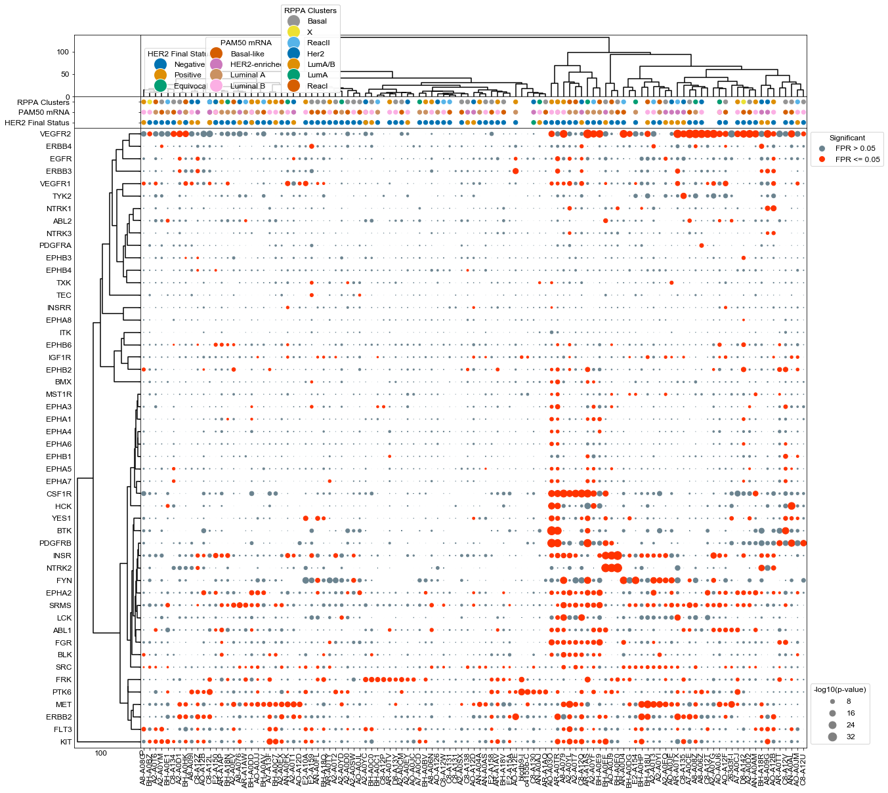
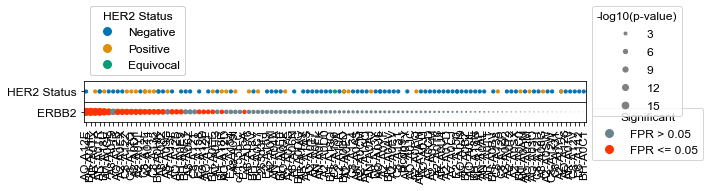

Analysis of CPTAC Breast Cancer Patient Samples (Mertens 2016)¶
[1]:
#Supporting packages for analysis
import numpy as np
import pandas as pd
#KSTAR imports
from kstar import config, helpers, calculate
from kstar.plot import DotPlot
#Set matplotlib defaults for arial 12 point font
from matplotlib import rcParams
rcParams['font.family'] = 'sans-serif'
rcParams['font.sans-serif'] = ['Arial']
rcParams['font.size'] = 12
import matplotlib.pyplot as plt
#where supplementary data was downloaded to (From https://figshare.com/articles/dataset/KSTAR_Supplementary_Data/14919726)
SUPPLEMENTS_DIR = './'
#Directory where KSTAR Supplemental data was set
odir = SUPPLEMENTS_DIR+'Supplements/SupplementaryData/BreastCancer/CPTAC_Mertins2016/'
#load the Mann Whitney activities and FPR for Tyrosine predictions,
#it will be faster and less data than loading all KSTAR outputs
activities = pd.read_csv(odir+'RESULTS/TCGA_Y_mann_whitney_activities.tsv', sep='\t', index_col=0)
fpr = pd.read_csv(odir+'RESULTS/TCGA_Y_mann_whitney_fpr.tsv', sep='\t', index_col=0)
s1 = pd.read_csv(odir+'brca_clinical_data_her2Determination_oneHeader.csv')
#load kinase map from supplementary data
KINASE_MAP = pd.read_csv(SUPPLEMENTS_DIR+'SupplementaryData/Map/globalKinaseMap.csv', index_col = 0)
#set preferred kinase names from the kinase map (make a kinase_dict)
kinase_dict = {}
for kinase in activities.index:
kinase_dict[kinase] = KINASE_MAP.loc[kinase,'Preferred Name']
Plot using agglomerative clustering on both kinases and patients, and add context to each sample¶
[2]:
#Setup a label dictionary that makes it easier to see patient sample names
mapDict = {}
cols = activities.columns
arr_Ids = []
for index, row in s1.iterrows():
id_val = row['Complete TCGA ID']
#remove the starting TCGA- or CPTAC- and find the match in the column header of data and map it
patient = id_val.strip('TCGA-')
patient = patient.strip('CPTAC-')
mapDict[id_val] = '' #default if it's not found
for col in cols:
if patient in col:
mapDict[id_val] = col
break
arr_Ids.append(mapDict[id_val])
s1['ID'] = arr_Ids
# Set the column labels to just have the labels
x_label_dict = {}
for label in cols:
l = label.strip('data:patient:')
l_arr = l.split('.')
x_label_dict[label] = l_arr[0]
[3]:
results = activities
results = -np.log10(results)
#Setup a figure with a context strip at the top for HER2 status and activity dots on the below axis
fig, axes = plt.subplots(figsize = (20, 20),
nrows = 3, ncols = 2,
sharex = 'col',
sharey = 'row',
gridspec_kw = {
'height_ratios':[.1,0.05, 1],
'width_ratios':[0.1,1]
},)
fig.subplots_adjust(wspace=0, hspace=0)
dots = DotPlot(results,
fpr,
figsize = (20,18),
dotsize = 5,
legend_title='-log10(p-value)',
x_label_dict=x_label_dict,
kinase_dict = kinase_dict)
#dots.drop_kinases_with_no_significance()
#Cluster changes the sorting of the values array, so be sure to plot context last so that it is in the same sort.
dots.cluster(orientation = 'left', ax = axes[2,0], method='ward')
dots.cluster(orientation = 'top', ax = axes[0,1], method='ward')
#dots.context(ax=axes[1,1],info = s1, id_column = 'Sample', context_columns = ['Human Tumor Her2'], orientation = 'top', dotsize =200, markersize= 15 )
#dots.context(ax=axes[1,1],info = s1, id_column = 'ID', context_columns = ['AJCC Stage', 'HER2 Final Status', 'PAM50 mRNA'], orientation = 'top', dotsize =40, markersize= 20 )
dots.context(ax=axes[1,1],info = s1, id_column = 'ID', context_columns = ['HER2 Final Status', 'PAM50 mRNA', 'RPPA Clusters'], orientation = 'top', dotsize =40, markersize= 20 )
dots.dotplot(ax = axes[2,1])
plt.savefig(odir+'CPTAC_all.pdf', bbox_inches='tight')

Plot ERBB2 activities with each samples associated HER2 status¶
[4]:
s1['HER2 Status'] = s1['HER2 Final Status']
[5]:
#Plot just the ERBB2 kinase activity and ERBB2 status
kinases = list(activities.index)
kinases.remove('ERBB2')
results = activities
results = results.sort_values('ERBB2', axis=1)
results = -np.log10(results)
#Setup a figure with a context strip at the top for HER2 status and activity dots on the below axis
fig, axes = plt.subplots(figsize = (9,0.75),
nrows = 2,
sharex = 'col',
sharey = 'row',
gridspec_kw = {
'height_ratios':[.5,.5]
},)
fig.subplots_adjust(wspace=0, hspace=0)
dots = dotplot.DotPlot(results,
fpr,
figsize = (9,0.75),
dotsize = 3,
legend_title='-log10(p-value)',
x_label_dict=x_label_dict)
#drop all but ERBB2
dots.drop_kinases(kinases)
dots.context(ax=axes[0],info = s1, id_column = 'ID', context_columns = ['HER2 Status'], orientation = 'top', dotsize =10, markersize= 10 )
dots.dotplot(ax = axes[1])
[5]:
<matplotlib.axes._subplots.AxesSubplot at 0x1214e8150>

Measure the number of cross-predictions between HER2-status and HER2/ERBB2 activity¶
[9]:
def returnPredictionRates(kinasePred, s1):
"""
Given a binary prediction of kinase status, what is the prediction rate
"""
ERBB2_pred_dict = {}
HER2_status_dict = {}
for patient_ID in kinasePred.keys():
if patient_ID in s1.ID.values:
ERBB2_pred_dict[patient_ID] = kinasePred[patient_ID]
status = s1[s1['ID']==patient_ID]['HER2 Final Status'].values[0]
if status == 'Positive':
HER2_status_dict[patient_ID] = True
elif status == 'Negative':
HER2_status_dict[patient_ID] = False
else:
HER2_status_dict[patient_ID] = 'Equivocal'
comp_df = pd.DataFrame.from_dict(ERBB2_pred_dict, orient='index', columns =['HER2 Prediction'])
temp = pd.DataFrame.from_dict(HER2_status_dict, orient='index', columns=['HER2 Status'])
comp_df = comp_df.join(temp)
trueNeg = 0
truePos = 0
falsePos = 0
falseNeg = 0
for index, row in comp_df.iterrows():
if not row['HER2 Status']: #negative for HER2 at biopsy
if not row['HER2 Prediction']:
trueNeg +=1
else:
falsePos += 1
else: #positive for HER2
if not row['HER2 Prediction']:
falseNeg += 1
else:
truePos +=1
TPR = truePos/(truePos + falsePos)
FPR = falsePos/(truePos+falsePos)
return comp_df, [truePos, falsePos, trueNeg, falseNeg]
[10]:
#generate the results, at a specific FPR, what % do we predict.
comp_df = {}
arrayDict ={}
alpha = 0.05
significance = fpr <= alpha
ERBB2_prediction = significance.loc['ERBB2']
comp_df, arrayVals = returnPredictionRates(ERBB2_prediction, s1)
[truePos, falsePos, trueNeg, falseNeg] = arrayVals
[11]:
comp_df #the dataframe that combines the HER2 activity prediction and corresponding status
[11]:
| HER2 Prediction | HER2 Status | |
|---|---|---|
| data:patient:A2-A0CM.07TCGA | False | False |
| data:patient:A2-A0D0.06TCGA | False | False |
| data:patient:A2-A0D1.07TCGA | True | True |
| data:patient:A2-A0D2.31TCGA | False | False |
| data:patient:A2-A0EQ.08TCGA | False | True |
| ... | ... | ... |
| data:patient:E2-A10A.02TCGA | False | False |
| data:patient:E2-A150.27TCGA | False | False |
| data:patient:E2-A154.03TCGA | False | False |
| data:patient:E2-A158.29TCGA | True | False |
| data:patient:E2-A159.24TCGA | False | False |
97 rows × 2 columns
[14]:
# HER2-negative patients that are predicted to have activity
HER2neg = comp_df[comp_df['HER2 Status']==False]
HER2neg
print('Number of HER2 Negative patients=%d, Number Considered HER2 active=%d'%(len(HER2neg), HER2neg['HER2 Prediction'].sum()))
Number of HER2 Negative patients=73, Number Considered HER2 active=12
[15]:
# HER2-negative patients that are predicted to have activity
HER2pos = comp_df[comp_df['HER2 Status']==True]
print('Number of HER2 Positive patients=%d, Number Considered HER2 active=%d'%(len(HER2pos), HER2pos['HER2 Prediction'].sum()))
Number of HER2 Positive patients=23, Number Considered HER2 active=10
[16]:
print("Check: there are %d patients and %d status"%(len(comp_df), truePos+trueNeg+falsePos+falseNeg))
Check: there are 97 patients and 97 status